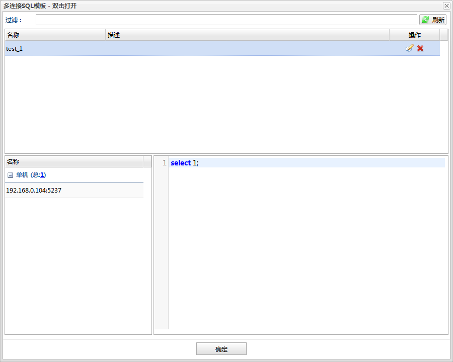

创建、修改和查看多连接查询模板。

过滤 过滤多连接查询模板列表。
刷新 刷新多连接查询模板列表。
数据库连接列表 显示当前多连接查询模板的数据库连接。
查询模板SQL内容 显示当前多连接查询模板的SQL内容。
 编辑，打开模板对话框用来编辑模板。
编辑，打开模板对话框用来编辑模板。 删除，删除选中的查询模板。编辑，打开模板对话框用来编辑模板。删除，删除选中的查询模板。
删除，删除选中的查询模板。编辑，打开模板对话框用来编辑模板。删除，删除选中的查询模板。